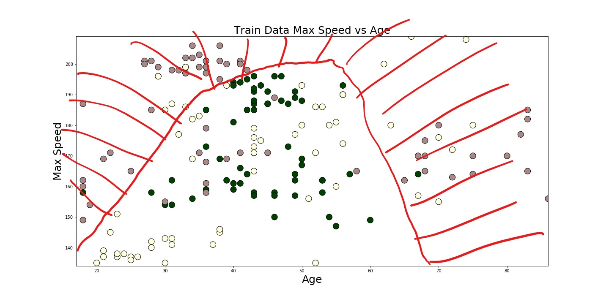
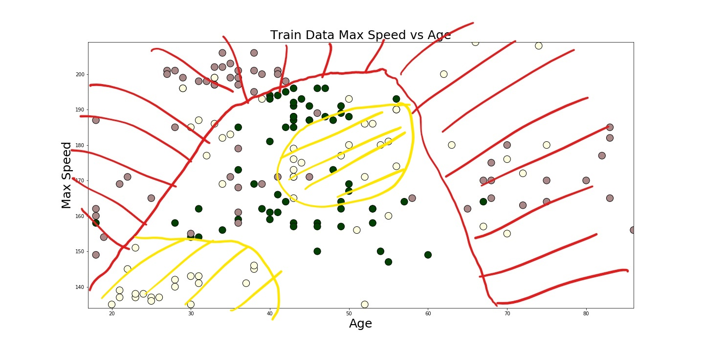

Comparing Machine Learning Strategies
using Scikit-learn and TensorFlow
Big Data Conference, Vilnius, November 2018
Oliver Zeigermann / @DJCordhose
Data Set Insurance

Manual Classification - red
Manual Classification - yellow
Manual Classification - green

Decision Bounaries

Random - A Baseline
 It still gets 33% percents right
It still gets 33% percents right
Rule based approach
 <Blocks
<Blocks
Decision Trees
 Still Rules - but this time learned from data
Still Rules - but this time learned from data
Ensemble - Random Forest
 Averaging over many decision trees
Averaging over many decision trees
KNN
For a case to predict
- Plot the case together with the known samples
- Look at a number (k) of nearest data points
- Choose k in such a way that you can get a majority
- Your prediction is the color of the majority
K Nearest Neighbors
 Simple, but fractal
Simple, but fractal
Support Vector Machines
Simple in a higher dimension

Neural Networks
 Composed of many simple neurons
Composed of many simple neurons